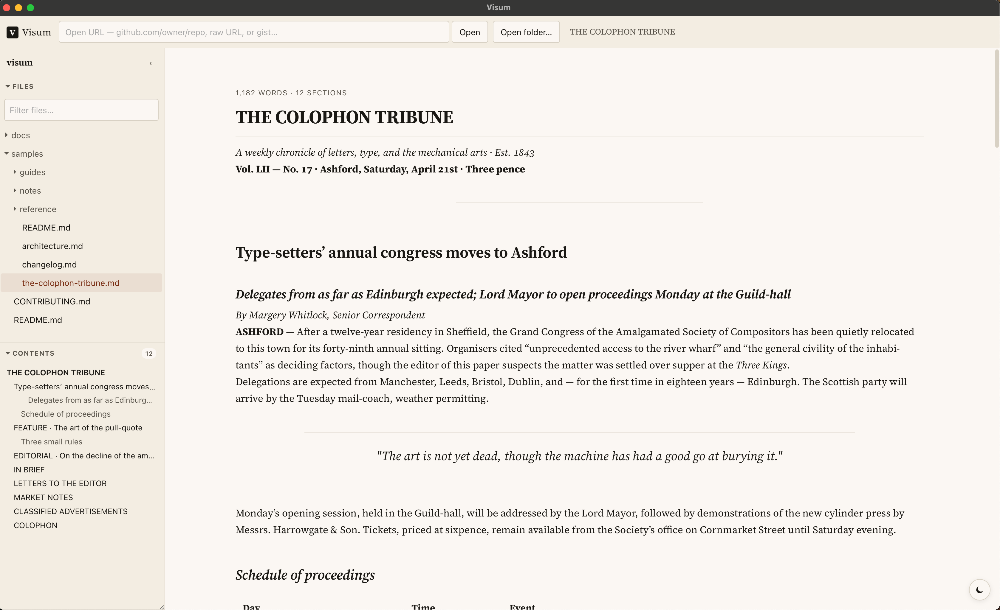

Markdown reader
Read markdown like it's print.
A desktop reader for local folders, GitHub repos, and any markdown URL — rendered through a sanitized Rust pipeline. Offline-first. Data stays on your machine.
Vidi /ˈwiː.diː/ · Latin, first-person perfect of vidēre, “to see.” “I saw.” The viewing half of Caesar's veni, vidi, vici.

Install
Grab the build for your platform from GitHub Releases.
.dmg — Apple Silicon and Intel
.msi installer or .exe (NSIS)
.deb or .AppImage
Quick start
- Launch Vidi.
-
Press ⌘O to open a folder of markdown files, or paste
a URL like
github.com/owner/repo/blob/main/README.mdinto the address bar and press Open. - Use the left sidebar to switch files or jump to a section. Use ⌘F to find within the current doc and ⌘⇧F to search across the whole folder.
- Press ⌘T for a new tab — each tab has its own folder, document, and reading position.
Bundled demo content
The Vidi repository ships a
samples/
directory of fictional documentation that exercises every
rendering feature — GFM tables, task lists, alerts, footnotes,
math, Mermaid diagrams, syntax-highlighted code across several
languages, nested folders, relative image paths, raw-HTML images,
a deliberately broken image to show the fallback, and an external
image to exercise the load prompt. Clone the repo and point
Vidi at samples/ to tour the whole feature set in a
few minutes.
Reading view
The reader is the centerpiece. Text is set in Source Serif 4 with hyphenation, hanging punctuation, and old-style numerals enabled by default — the goal is that running prose feels like a book, not a web page.
- Adjustable column width. Hover either edge of the column and drag — both edges highlight as you move, and the column rebalances around the center line. Double-click an edge to reset to the default measure (92ch). The numeric value is also in Settings.
-
Dark mode. Follows
prefers-color-schemeautomatically. Toggle manually with the moon/sun control in the bottom-right corner. - Reading position is remembered per source. Come back to a long doc and you'll land where you left off.
Folders & the sidebar
Open a folder (⌘O) and the left sidebar fills with two collapsible sections:
-
Files — a recursive tree of every
.md/.markdownfile. Respects.gitignore, skips.gitandnode_modules. Filter input for quick lookups. - Contents — a live table of contents for the active document, built from heading text with stable slug anchors. Click any entry to smooth-scroll to that heading.
Each section takes half the remaining height by default. Collapse one and the other expands to fill. A file-system watcher keeps the tree in sync with disk changes and re-renders the active doc when it's saved externally.

Remote URLs & GitHub
Paste any of these into the address bar:
https://github.com/owner/repo— loadsREADME.mdfromHEAD.https://github.com/owner/repo/blob/main/docs/foo.mdhttps://raw.githubusercontent.com/owner/repo/main/path.mdhttps://gist.github.com/user/idor a gist raw URL- Any other URL whose body is markdown
GitHub URLs are normalized to their raw-content equivalents so
relative links (./other.md, ../api.md)
resolve correctly. External links and external images both prompt
before they touch the network — decisions can be remembered per
host in Settings.
Tabs
Press ⌘T to open a new tab. Each tab carries its own folder tree, active document, loading state, and reading position. Tabs appear above the address bar only when there are two or more open — a single tab keeps the chrome quiet.
-
Overflow picker. When tabs don't fit, a
⌄ Nchip appears at the right end; clicking it opens a searchable list of every open tab. - Middle-click a tab to close it. ⌘W closes the current. ⌘⇥ cycles forward, ⌘⇧⇥ backward. ⌘1…⌘9 jumps by index.

Search
Two levels of search, both in-app — no external index, no network round-trip.
- Find in document (⌘F) opens a floating bar anchored to the reader. Matches highlight in yellow; Enter / Shift+Enter cycle through them; Escape closes.
- Full-text search across the folder (⌘⇧F) uses a Tantivy index built in memory when a folder opens. Title, body, and path are all searchable; hits show a snippet with the term highlighted.

Bookmarks & recents
⌘D adds the current document to Bookmarks. ⌘B opens the bookmarks panel. ⌘Y opens the recent-docs panel — the last 50 opened documents, with relative times.
Both lists live in a JSON file under your platform's app-data directory. Nothing leaves the machine.
Print / save as PDF
Press ⌘P to open the print dialog. The print stylesheet hides every piece of app chrome (address bar, sidebars, panels, find bar) and opens up the prose column to fill the page. On macOS, the print dialog's PDF → Save as PDF menu gives you a portable archive version for free.
External-image placeholders are omitted from print (we don't have the pixels), and external links are expanded inline with their URLs in angle brackets so the printout stays self-contained.
Supported markdown
All of GitHub-flavored markdown plus a few extras:
- GFM coreTables, task lists, strikethrough, autolinks, footnotes.
- Alerts
> [!NOTE],[!TIP],[!IMPORTANT],[!WARNING],[!CAUTION]rendered as semantic<aside>s. - MathInline
$x^2$and display$$…$$rendered with KaTeX (lazy-loaded). - MermaidFenced
```mermaidblocks render as SVG (lazy-loaded, sandboxed). - Syntax highlightingEvery common language via syntect — inline styles, no JS.
- Emoji shortcodes
:smile:→ 😄 (only outside code blocks). - Smart punctuationTypographic quotes, en/em dashes, ellipses where the source has them.
- Raw HTMLAllowed through a strict sanitizer. Relative
srcs on<img>tags are rewritten toasset://.
Settings
Open with ⌘,. Every setting persists to a JSON file in the app-data directory and takes effect live.
| Setting | What it does |
|---|---|
| Theme | System / light / dark. |
| Measure | Column width cap in ch. Also adjustable by dragging the column edge. |
| Font scale | Multiplies the body size from 0.85× to 1.25×. |
| Drop caps | Enables a newsprint-style drop cap on the first paragraph after h1. |
| Render math | Toggle KaTeX globally. |
| Render mermaid | Toggle Mermaid globally. |
| Trusted hosts | List of hosts approved for external images / links. Remove any entry to re-prompt. |
Keyboard shortcuts
| Key | Action |
|---|---|
| ⌘O | Open folder… |
| ⌘T | New tab |
| ⌘W | Close current tab |
| ⌘⇥ / ⌘⇧⇥ | Next / previous tab |
| ⌘1…⌘9 | Jump to tab N |
| ⌘\ | Toggle sidebar |
| ⌘F | Find in document |
| ⌘⇧F | Search across folder |
| ⌘B | Bookmarks panel |
| ⌘D | Bookmark current document |
| ⌘Y | Recent documents panel |
| ⌘, | Settings |
| ⌘P | Print / save as PDF |
Privacy & safety
Vidi is local-first by design. There is no account, no cloud, no analytics, no telemetry. The only outbound network requests are:
- Fetching a markdown URL when you paste one in the address bar.
- Loading an external image after you've confirmed it (once, or once per host).
- Opening an external link in your OS browser after you've confirmed it.
Rendering pipeline
Every markdown document goes through the same Rust-side pipeline before any HTML reaches the webview:
- Parse with pulldown-cmark (GFM options enabled).
- Heading IDs slugify from text so anchor links work.
- Alerts rewriter turns
> [!NOTE]into semantic<aside>. - Emoji shortcodes are expanded (outside code).
- Math placeholders emitted for client-side KaTeX.
- Mermaid placeholders emitted for client-side rendering; output SVG is passed through DOMPurify.
- Syntect highlights fenced code blocks with inline styles.
- Links / images are classified (internal / external / asset / anchor) and annotated so the UI can route or prompt.
- Raw HTML
<img src>in the source is normalized the same way. - Ammonia sanitizes the final HTML with a strict allowlist: no scripts, no event handlers, no
javascript:, nohttp:image sources (onlyhttps:,asset:, anddata:image/).
Every <style> attribute is filtered down to the
exact five properties syntect emits. Every
data- attribute is on a named allowlist. Every URL
scheme is explicit. Nothing about the sanitizer is derived from
string matching in the webview.
License
Vidi is MIT-licensed — see LICENSE.
Bundled fonts: Source Serif 4
(OFL-1.1, Adobe)
and JetBrains Mono
(OFL-1.1, JetBrains).
Full license texts ship with the app under
public/fonts/*-LICENSE.txt.